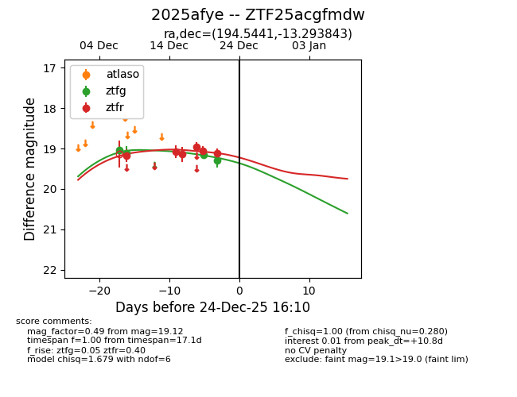
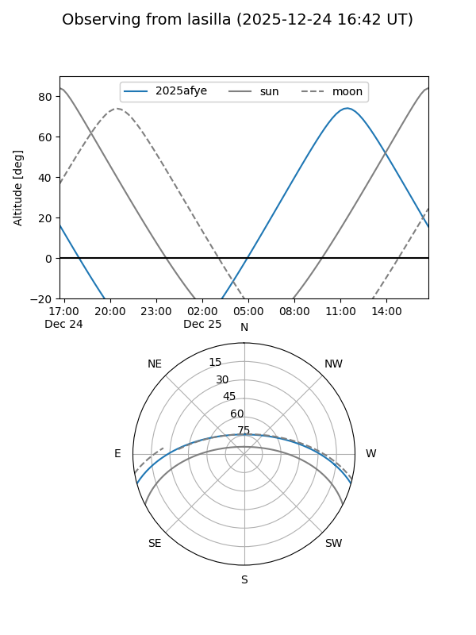
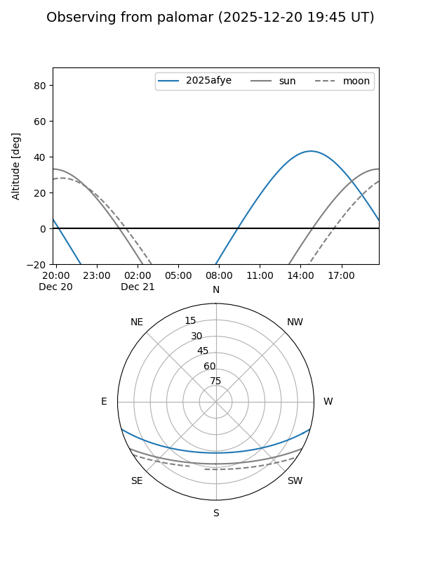

2025afye
Target 2025afye at 2025-12-18 11:17
Aliases and brokers:
FINK: fink-portal.org/ZTF25acgfmdw
Lasair: lasair-ztf.lsst.ac.uk/objects/ZTF25acgfmdw
ALeRCE: alerce.online/object/ZTF25acgfmdw
TNS: wis-tns.org/object/2025afye
YSE: ziggy.ucolick.org/yse/transient_detail/2025afye
alt names
ZTF25acgfmdw (ztf,fink_ztf)
2025afye (tns,yse)
Coordinates:
equatorial (ra, dec) = 194.5441,-13.29384
equatorial (HMS+DMS) = 12:58:10.59,-13:17:37.83
galactic (l, b) = (305.4591,+49.54484)
Photometry
last ztfg=19.12, ztfr=19.15
2 ztfg, 3 ztfr detections
Lightcurve

Visibility


Additional plots